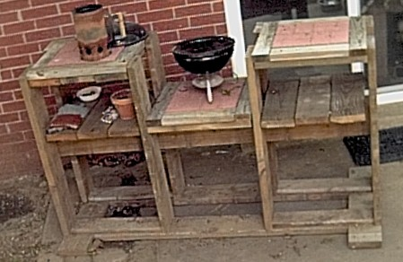
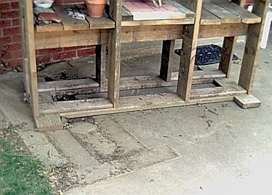
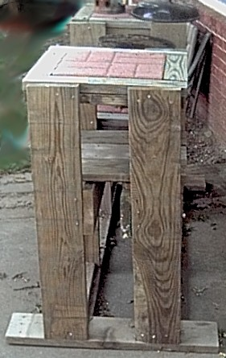

Bar-B-Q Table


I have the plans in PDF format and as a PPT. The following instructions should be used in
conjunction with this PDF document.
Before beginning this project please take a look at the following pages. These pages contain things about simple
carpentry I learned. When you are finished you can visit the Main Page:
1) Wood Is Not The Size They say it is
2) The right tools are important, and they really
don't cost that much
3) Technique, a few hints and tricks help make the
job go easier.
I made the Bar-B-Q Table for me. I am well over 6 foot, so the counter height is about 44"
high. Standard counter tops are 36" high. I also (as you can tell in the picture) have a small grill
that is about 16" wide by about 12" high. Keep this in mind when you make this table. If
you want a standard height top, just change the measurement of 42 X 1.5 X 7.25" boards to 34 X 1.5 X 7.25"
boards. If you have a larger grill, add another 16" paver to the middle section by making one of the paver
frames (first page of the diagram) 39.25" instead of 23.25" (adjusting all of the board sizes) AND
change the measurement on the 61.25 X 1.5 X 7.25" boards to 77.25 X 1.5 X 7.25" AND change the
measurement on the 75.75 X 1.5 X 7.25" boards to 91.75 X 1.5 X 7.25". Finally, if you want the
height of the grill a little higher or a little lower, you can change this by the height of the 75.75 X 1.5 X
7.25" boards, the drop from the counter of the middle section will be 3" minus the height of these boards
from the counter space (see Page 3, where it shows these boards 16" below the top). This is why these are downloadable powerpoint presentations so you can make
adjustments to the design if you want to :-).
The paver stones I used were 16" wide by 16" tall. You should be able to
find this size easily. This Bar-B-Q bench will hold a small
Weber grill (and most likely the large
portable grill, I haven't tried that one yet but it should fit), a
hibachi grill (as long as the base
is smaller than 17").
Page 1 - First make the three "trays" that the 16" paver stones will sit in.
For each tray cut two 8.75 X 1.5 X 7.25" boards and two 23.25 X
1.5 X 7.25" boards. Do not make these boards too short, if you are going to make an
error, make them a little big. Now cut your two 16.25 X 1.5 X 3.5" boards and the
two 23.25 X 1.5 X 3.5" boards. Take the two 23.25 X 1.5 X 7.25" boards and
lay them on a flat surface. Place the two 8.75 X 1.5 X 7.25" boards between them.
You should have a square that is 23.25" on a side. Place the two 16.25 X 1.5 X 3.5"
boards and the two 23.25 X 1.5 X 3.5" boards on top. You should have something that
looks like Page 1 of the diagram. Place the 16" paver stone in the middle. To make the
paver stones fit, most likely the 1.5" boards will not be flush with the 7.25" boards, but
they will be close. This space between the paver and the boards will make it easy to remove and
clean the paver and put it back in. You will want about 1/8" room around all sides of the
paver. Now using your drill and deck screws secure all the 1.5" boards to the 7.25"
boards. Do this to make two more paver frames.
Page 2 - Now cut your 2 Ea 61.25 X 1.5 X 7.25" boards, 2 Ea 35 X 1.5 X 7.25" boards and the 8 Ea
42 X 1.5 X 7.25" boards. Cut your 4 Ea 23.25 X 1 X 5.5" boards. The 4 Ea 23.25 X 1 X
5.5" boards will do two things for you. First they will hold the 61.25 X 1.5 X 7.25" boards
and 2 Ea 35 X 1.5 X 7.25" together and they will also act as a spacer to tell you where to place the
42" upright boards.
Lay the 2 Ea 61.25 X 1.5 X 7.25" boards and 2 Ea 35 X 1.5 X 7.25" boards on the patio (nice flat
surface) like they are shown on page 2. Holding one of the 42 X 1.5 X 7.25" boards on the very end
upright (like it is going to be when you attach it, this is so that you can see how much room to leave when
you attach this board later), put two of the 23.25 X 1 X 5.5" boards at one end as shown. Secure these
23.25 X 1 X 5.5" boards to the 2 Ea 61.25 X 1.5 X 7.25" boards and 1 Ea 35 X 1.5 X 7.25" board.
Do likewise at the other end with the other two of the 23.25 X 1 X 5.5" boards. As best you
can secure your 4 ea 42 X 1.5 X 7.25" boards on the ends. Turn the whole thing over so it is resting
on what will later be the top of the Bar-B-Q. Now drill your deck screws straight down into the 42"
boards from the bottom. Obviously you will need (at least) 2.5" deck screws. I think I used
3" deck screws for this. Now take the four 42" that remain, place them where they should be
(butted up against the 23.25 X 1 X 5.5" boards) and secure them in place, then turn the entire structure
back over so that it is stitting on the bottom frame with the eight 42" boards sticking straight up.
Do not worry if there is still some wobble in the upright boards. The long boards down the middle will
fix this.

End of Page 2 and Page 3 - Now install the middle 2 Ea 75.75 X 1.5 X 7.25" boards down the inside
middle. I would strongly suggest using clamps to help hold these boards in place while you are
securing them. Be sure that these boards 75.75" boards are level (and even with each other) and
that the distance between all of the upright boards is 23.25" (or there abouts). These long boards
should attach to the end boards and be flush with the end boards.
Page 3 - Now attach the three paver stone frames. If you left room to remove the paver stones then you
can remove the paver stones before attaching the frames, this makes them easier to handle. Get your
level out (I have a level on my
Stanley combination Square
) and make sure that the paver stone frames are level when attaching the frames to the Bar-B-Q. Cut the
last boards, 6 Ea X 1.5 X 7.25" boards as your shelves underneath and secure them in place.
Now you should have a very solid frame. The one I built I can stand on the top and walk around and
the frame does not budge one inch. Put your pavers in the frames and you are ready for your Bar-B-Q bench.
As always feel free to send me comments (my e-mail address is on the main page).
Main Page